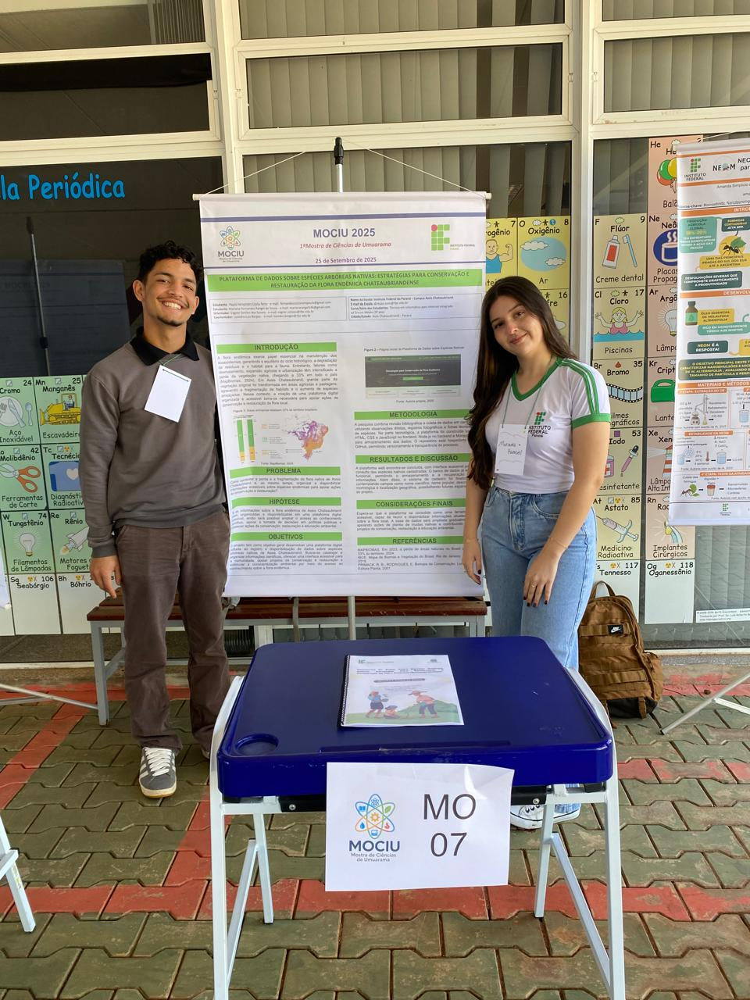

Plataforma de Dados sobre Espécies Arbóreas Nativas: Estratégias para a Conservação e Restauração Local
Desenvolvida pelo IFPR Campus Assis Chateaubriand, nossa plataforma é o repositório digital sistematizado da flora endêmica de Assis Chateaubriand. Nossa missão é preencher a lacuna de dados integrados, apoiando decisivamente ações educativas, científicas e políticas públicas para a conservação.
Explore as Espécies CadastradasO Desafio da Conservação na Flora Chateaubriandense
A sobrevivência da flora nativa é ameaçada pela intensa pressão antrópica e fragmentação de habitats na região, demandando ação imediata e baseada em dados.
Perda de Habitat
A vegetação local foi majoritariamente transformada em áreas agrícolas e pastagens.
Dados Alarmantes
O Brasil perdeu 33% das suas áreas nativas em 2023, reforçando a urgência da conservação local (MapBiomas).
Ausência de Repositório
A falta de um repositório digital sistematizado dificulta a gestão e o desenvolvimento de políticas públicas eficazes.
Nossas Estratégias: Tecnologia, Restauração e Impacto Social
Catalogação e Organização
Coletamos e organizamos informações científicas (revisão bibliográfica e campo) em fichas técnicas, incluindo nome científico, nome popular, descrição morfológica e localização.
Ações de Restauração
A plataforma serve de base para projetos de conservação e educação ambiental. Futuramente, planejamos realizar ações sociais de plantio de mudas nativas, registradas e catalogadas.
Conscientização Social
Disponibilizamos o acesso virtual e acessível às informações para aumentar a conscientização da sociedade sobre a importância da flora endêmica.
Apoio a Políticas Públicas
Nosso banco de dados é uma ferramenta essencial para subsidiar políticas públicas e a tomada de decisão para a conservação.
Tecnologia a Serviço da Flora
Plataforma e Interface
A plataforma web foi desenvolvida utilizando HTML, CSS e JS (frontend) e Node.js (backend), garantindo uma interface acessível e funcional.
Banco de Dados Robusto
A informação é armazenada em um Banco de Dados Funcional (MongoDB), permitindo o armazenamento, consulta e inserção de novas espécies.
Perspectivas Futuras
O próximo passo é a implementação do georreferenciamento das árvores, permitindo a visualização espacial da distribuição das espécies nativas no município.
Quem Está Por Trás da Iniciativa?
Apoio Institucional
O projeto é uma iniciativa do Instituto Federal do Paraná (IFPR) Campus Assis Chateaubriand.
Desenvolvedores

Paulo Fernandes Costa Neto e Mariana Rangel Fernandes de Souza